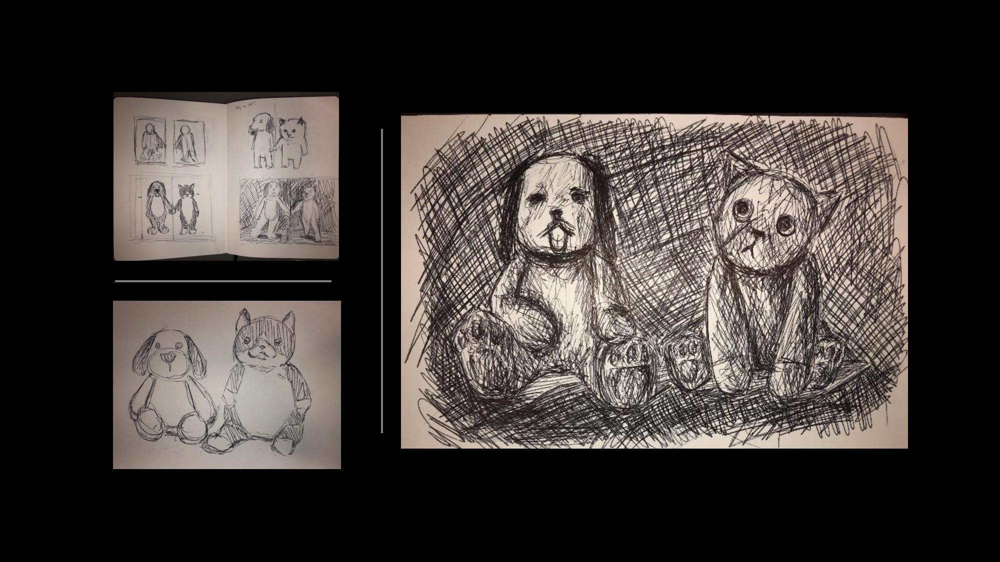
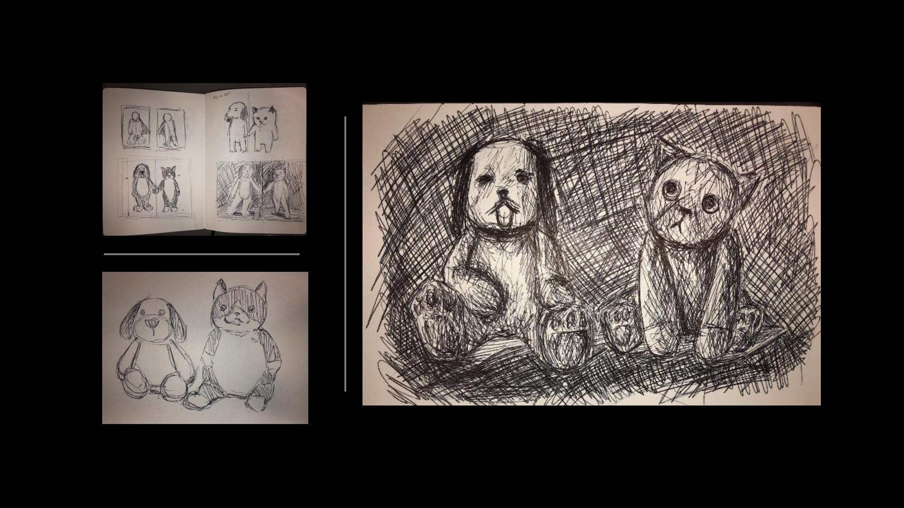

Distractions
Oil on Canvas
40” x 30”
2018
“Light fascinates. Light guides. And light distracts. Much like my entrance into this room, drawn irresistibly to the lights, I explore with my tiny legs, savoring a hint of orange, a splash of yellow. Over there, I rediscover youth, the allure of putting my legs on that glow, tasting a touch of pink, a whisper of purple. In each moment of chasing, tasting, and darting between lights, I unveil a new fragment of the room's essence.”
🖼️:
▫️ Studio Arts Honors Solo Show, Stony Brook University, Stony Brook NY (2019)
 

×